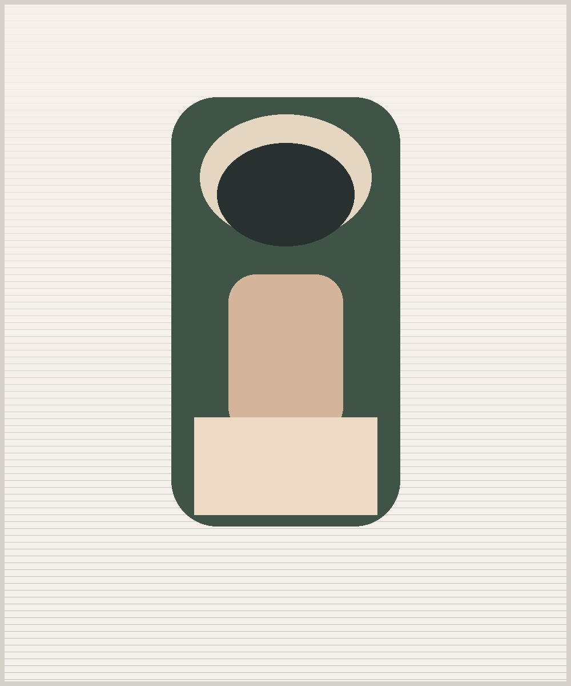

Geoinformatik • Raum • Daten
Ich nutze Räume, Karten und Daten, um Fragen sichtbar zu machen.
Ich bin Lina Hartmann und arbeite mit digitalen Karten, Geodaten und räumlicher Analyse. Meine Leidenschaft liegt darin, komplexe Zusammenhänge in verständliche, visuell klare Informationen zu übersetzen.
Ob bei Projekten zur Stadtentwicklung, zur Umweltbeobachtung oder zur Planung von Mobilität: Für mich ist Geoinformatik ein Werkzeug, um Sichtbarkeit zu schaffen – zwischen Daten, Orten und Menschen.

Stationen
| Jahr | Station | Ort | Stichwort |
|---|---|---|---|
| 2018 | Erstes GIS-Projekt | Hamburg | Landnutzung |
| 2020 | Geodatenanalyse | Berlin | Netzwerke |
| 2021 | Master-Workshop | Leipzig | Remote Sensing |
| 2022 | Forschungspraktikum | Freiburg | Umweltmonitoring |
| 2024 | Projektentwicklung | Leeds | Open Data |
| 2026 | Aktuelle Praxis | Heidelberg | Digitale Karten |